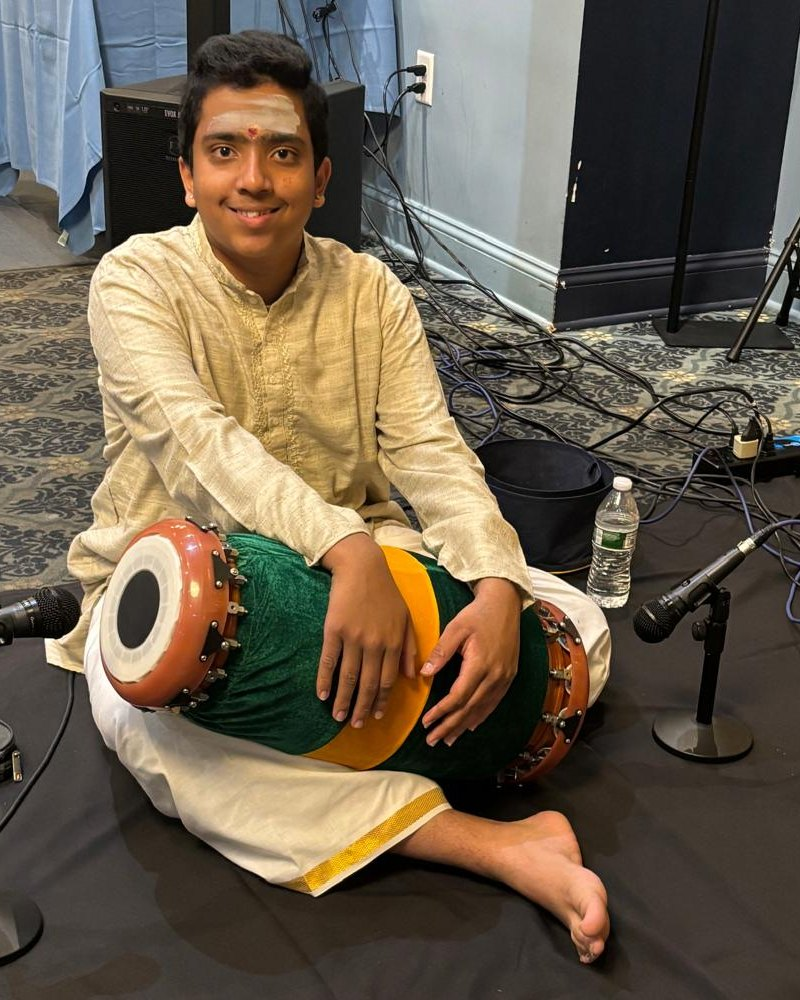

Rhythm · Memory · Learning
Can the structure of a rhythm help you remember?
SvaraScience is a student-led project testing CLAP, a free memory method built on Carnatic rhythm cycles, and sharing what we find, whatever the result.
digits of Pi, memorized in 5 days on a Carnatic rhythm cycle. That is where the question started.
Our vision
Every student, musical or not, can use rhythm to learn and remember their schoolwork.
Our mission
Teach students a simple, free method for learning through rhythm, share it openly with teachers everywhere, and honestly test whether it works.
Three parts, one idea
CLAP
The method: Chunk, Lock, Arrange, Perform. Free for anyone to use.
How it works →Svara Learning
The teaching side: a 12-session, 45-minute workshop curriculum, written as a protocol so every room runs it the same way.
Where it's taught →SvaraScience
The research: testing whether CLAP really works, with the results shared openly.
The study →
How it started
From ages 3 to 6, my grandmother taught me through song, setting what I needed to learn to music. I have played mridangam, a South Indian classical drum, since age 6.
In 6th grade, I memorized 256 digits of Pi in 5 days by locking them onto a Carnatic rhythm cycle (Thisra Gathi, groups of 3), and placed 2nd in my school's Pi Challenge.
One person, one try, no comparison group. So I wanted to find out: was it the rhythm, or was it just me?
Ajay Siva Vaithiyanatha Siva, founder
Try it: lock Pi onto a beat
Adi tala has 8 beats. Each tap moves to the next beat and locks three digits of Pi onto it. Go around once, then hide the digits and say them back with the beat.
A simplified demo of the idea, not the study.
Where things stand
Experiment 1, designed with Professor Arnold Glass: a self-test of CLAP on digit-span memory. A 10-day daily sprint, then memory checks after 1 week and 1 month off.
Experiment 2 and testing with other students, only after review-board approval and with participant consent.
Results and a write-up in early 2027, and "Study Smarter" CLAP workshops through the MCTS Neuroscience Society.
Watch the talk
At Orator Academy Talks 2025, Ajay told the story of memorizing Pi with rhythm, the idea that grew into CLAP, and urged every student to follow their passion. The talk earned an Outstanding Orator award.